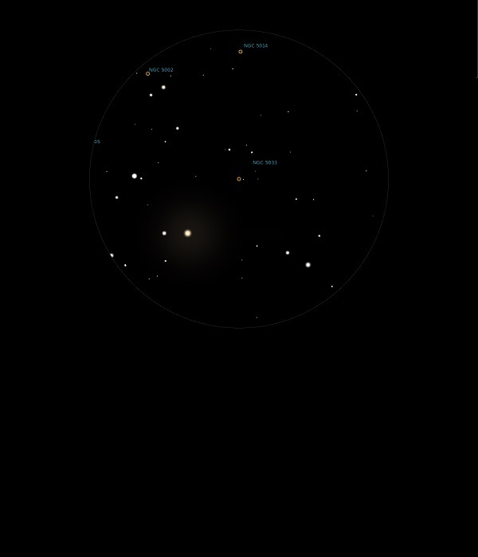

NGC 5033
Spiral Galaxy in Canes Venatici
NGC 5033
Mag 10.8
03/07/14
In the same 25mm FOV a s NGC 5005 but much smaller and dimmer
In 12mm FOV forms a dim triangle with two stars of Mags 11.35
and 11.05
The only other star in the same FOV being the Mag 6.5 HIP
64530